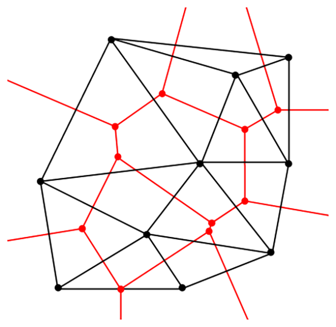

3.2 - Voronoi Diagrams
The second concept we introduce is strictly related to Delaunay Triangulation: Voronoi Diagrams.
Voronoi Diagrams (Tassellation, Partition, Decomposition et al.) take its name from its designer, the Russian Mathematician Georgy Feodosevich Voronoi. Particularry in France, Voronoi Diagrams are also known as Dirichlet tessellation (after Johann Peter Gustav Lejeune Dirichlet) or Thiessen polygons.
A Voronoi diagram is a partitioning of a space $\mathbb R^D$ into regions based on the distance from the sites $S \in \mathbb R^D$. For each site there is a corresponding region consisting of all points closer to that site than to any other. These regions are called Voronoi cells.
More formally we can define the Voronoi Diagram $\mathcal V(S)$ over the set of sites $S$ as the set of the Voronoi cells $V_t$:
\[ \mathcal V(S) = \{V_t(S) \mid t \in S\}\]
where the Voronoi cells are defined $\forall t \in S$ as:
\[ V_t(S) = \{p \in \mathbb R^D \mid d(t, p) < d(u, p), \forall u \in S \backslash t\}\]
Like for the Delaunay Triangulation, also in this case the Tasselation could be defined on whichever metrics. However if different metrics are used, like the 0-norm, something weird could happend.
Properties
- The closest pair of sites corresponds to two adjacent cells in the Voronoi diagram.
- Assume the setting is the Euclidean plane and a group of different sites are given. Then two sites are adjacent on the convex hull if and only if their Voronoi cells share an infinitely long side.
- If the space is a normed space and the distance to each site is attained (e.g., when a site is a compact set or a closed ball), then each Voronoi cell can be represented as a union of line segments emanating from the sites. As shown in [Ree09], this property does not necessarily hold when the distance is not attained.
- Under relatively general conditions Voronoi cells enjoy a certain stability property: a small change in the shapes of the sites, e.g., a change caused by some translation or distortion, yields a small change in the shape of the Voronoi cells. This is the geometric stability of Voronoi diagrams. As shown in [Ree11], this property does not hold in general, even if the space is two-dimensional (but non-uniformly convex, and, in particular, non-Euclidean) and the sites are points.
Voronoi Diagrams and Delaunay Triangulation
The Voronoi diagram $\mathcal V$ have a particularly strict relation with Delaunay Triangulations $\mathcal D$. In fact, in a sense, $\mathcal D$ and $\mathcal V$ are one the dual of the other.
In fact, if we consider the graph given from separation hypersurfaces edges of $V$, the Delaunay Triangulation is nothing than the dual graph of it.

Figure 1: Duality of Delaunay Triangulation (in black) and Voronoy Diagram (in red).